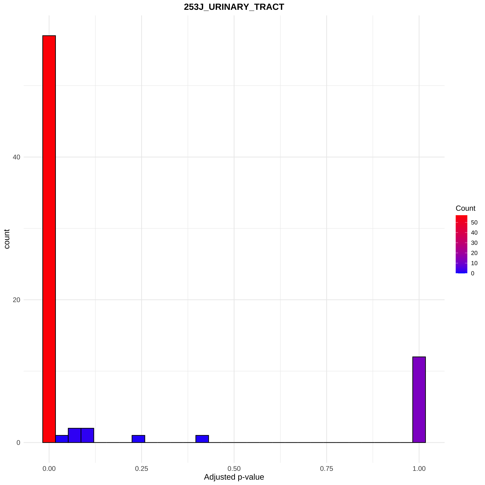
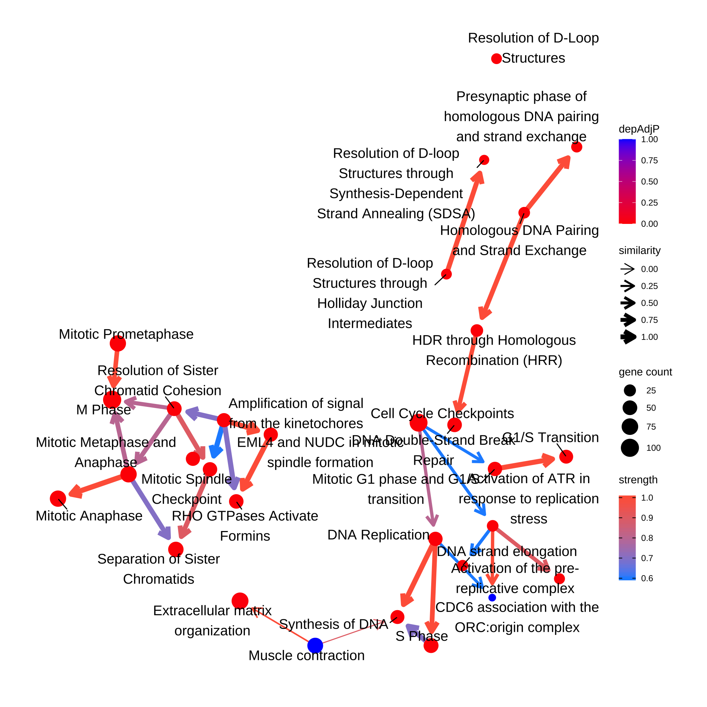

Chapter 7 Testing the score inside the pathway
Test whether the dependency scores of genes within the pathway is different from overall score distribution (depKStest).
The type variable can be either cell_line or lineage.
pway <- depKStest(results = pway, type = "cell_line", cellLineName = "253J_URINARY_TRACT", adjMethod = "bonferroni", dep = dep, depMeta = depMeta)
ggplot(pway@result, aes(x=depAdjP)) +
geom_histogram(aes(fill=..count..), col="black") +
scale_fill_gradient("Count", low = "blue", high = "red") +
theme_minimal(base_family = "Arial Narrow") +
ggtitle("253J_URINARY_TRACT")+
xlab("Adjusted p-value")+
theme(plot.title = element_text(hjust=0.5, face="bold"),
axis.text = element_text(size=10),
axis.title = element_text(size=12))
Reflect information in the plot.
bnpathplot(results = pway,
exp = vsted,
expSample = incSample,
color = "depAdjP",
nCategory = 30,
R = 10,
labelSize=5,
expRow = "ENSEMBL")